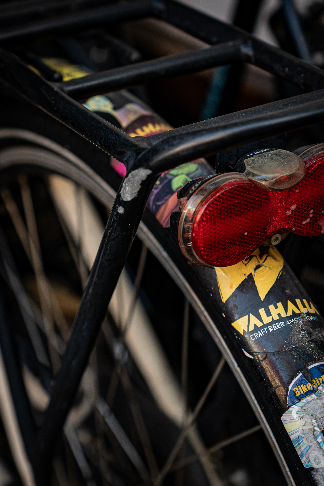

Diese Arbeit untersucht, wie kleine, unscheinbare Elemente das Bild einer Stadt prägen. Nicht das Offensichtliche steht im Mittelpunkt, sondern das, was man im Alltag übersieht. Durch bewusste Beobachtung entsteht ein Blick auf Amsterdam, der zeigt, wie viel unsichtige Schönheit in jedem Winkel steckt.

HIDDEN IN THE DETAILS
KONZEPT
ENTDECKE DIE DETAILS
Reflexionen
Wir entdecken, wie Spiegelungen die versteckten Seiten von Amsterdam zeigen. Wasser, Glas und Schaufenster verwandeln die Stadt in abstrakte Kompositionen.
Städtische Details
Kleine Dinge erzählen grosse Geschichten – von Fahrradklingeln bis zu Strassenstrukturen. Diese Fragmente fangen den Rhythmus des Alltags ein. Das Unbemerkte wird zum Herz der Stadt.
Perspektiven
Hinter jedem Foto steckt ein Moment des bewussten Sehens. Hier erfährst du mehr über Technik, Licht und Komposition, die jedes Bild prägen. Langsamer zu schauen verändert, wie wir die Welt wahrnehmen.